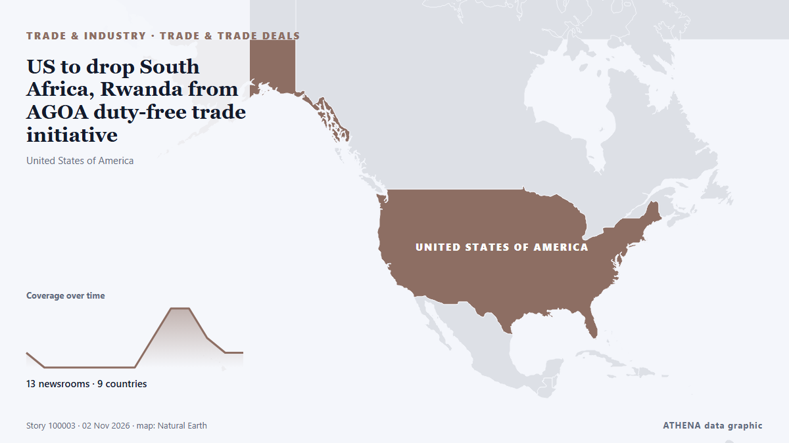

Comercio y acuerdos
PatrocinadoPresentado por  Cybernetics and Artificial Intelligence Lab Welcome to the Cybernetics and Artificial Intelligence Laboratory, established at the Department of Business Administration of the National
Cybernetics and Artificial Intelligence Lab Welcome to the Cybernetics and Artificial Intelligence Laboratory, established at the Department of Business Administration of the National
| 21 oct | 0 |
|---|---|
| 22 oct | 0 |
| 23 oct | 0 |
| 24 oct | 0 |
| 25 oct | 0 |
| 26 oct | 0 |
| 27 oct | 0 |
| 28 oct | 0 |
| 29 oct | 3 |
| 30 oct | 4 |
| 31 oct | 4 |
| 1 nov | 6 |
| 2 nov | 7 |
| 3 nov | 0 |
Los titulares se muestran en inglés, tal como se publicaron.

US to drop South Africa, Rwanda from AGOA duty-free trade initiative
Trade Industry and Competition Minister Parks Tau says South Africa is prepared for any outcome. de SABC News
White House cites Korean trade deal, Alaska gas project among Trump's fulfilled pledges
The White House on Monday highlighted U.S. de The Korea Times
Underground areas of Hagia Sophia to open, revealing new sections
The announcement was made by Turkey’s Minister of Culture and Tourism, who presented the progress of the extensive restoration works at the historic monument. de ProtoThema English
Iran’s export to Turkey rises 59% in H1
Director General of the West Asia and Africa Office of the Iran Trade Promotion Organization, while describing Iran’s trade trend with some West Asian countries as positive, announced a 59 percent… de Tehran Times
Eni begins gas production at Maha field offshore Indonesia
Eni has commenced gas production from the Maha field, situated in the West Ganal block of the Kutei Basin offshore Indonesia. de Offshore Technology
BYD reports higher sales for sixth month on exports
Continued strength of overseas demand for Chinese cars helped ease investor concerns about the prolonged downturn in their home market. de Free Malaysia Today
Greek Honey Exports Grow as e-Honey Targets Market Fraud
Greek honey exports rose 10.5% to $31.6 million in 2025 as Greece introduced e-honey to protect product origin and improve market transparency. de Greek City Times
$32M Vikings WR linked to former team 49ers in surprising NFL trade rumor
Minnesota Vikings wide receiver Jauan Jennings linked to San Francisco 49ers amid injuries and wide receiver depth concerns. de Times of India
Over 21,000 people affected by adverse weather across Sri Lanka
Cyclone ‘Arnab’ affects over 21,000 people across 18 districts in Sri Lanka. de Ada Derana
South Korea exports nearly double in October, strongest growth since 1974
SEOUL: South Korea's exports nearly doubled in October from a year earlier, beating market expectations and marking the sharpest increase in more than 50 years, trade data showed on Sunday. de New Straits Times
Russia extends diesel export ban until January
The Russian government extended on Saturday a temporary ban on diesel fuel exports until the end of January 2027, following a previous announcement by Russian Deputy Prime Minister Alexander Novak. de AzerNews
South Africa braces for AGOA review amid US trade talks
South Africa is preparing for possible changes to its eligibility under the African Growth and Opportunity Act (AGOA), while keeping trade negotiations with the United States ongoing, Foreign… de CGTN (World)
Exhibitions, trade delegations proposed with Sri Lanka
Chamber proposes single-country shows, outlets in both markets as envoy says ties must yield commercial benefit. de Express Tribune
Opportunities for All: Small enterprises shine at the Canton Fair
70 years on, why global buyers keep coming back to Canton Fair. de CGTN (China)
Expect Gusts Up to 85 km/h and Rain in Costa Rica This Weekend
Gusts could reach 85 km/h in Costa Rica's mountains and northern Guanacaste today, with rain in the Caribbean and storms in the South Pacific. de The Tico Times
Letter from China: The one-person company, the port and the shopping bag, snapshots from Hainan FTP
The province’s services exports increased to around $6.02 billion in the reporting period. de TASS (English)
Over 4,500 students participate in technical symposium at KITSW
The World Health Organization (WHO), the World Intellectual Property Organization (WIPO) and the World Trade Organization (WTO) will hold the 13th Joint Technical Symposium on “Enabling Ecosystems… de WTO news
Trump declares robot imports a national security threat
President orders trade talks on foreign-made factory robots, threatens tariffs. de Ars Technica
China’s Xi, Swiss president praise trade deal that boosts access
The accord will give Switzerland unusually broad access to Chinese markets, contrasting with trade barriers imposed by the US and European Union. de Free Malaysia Today